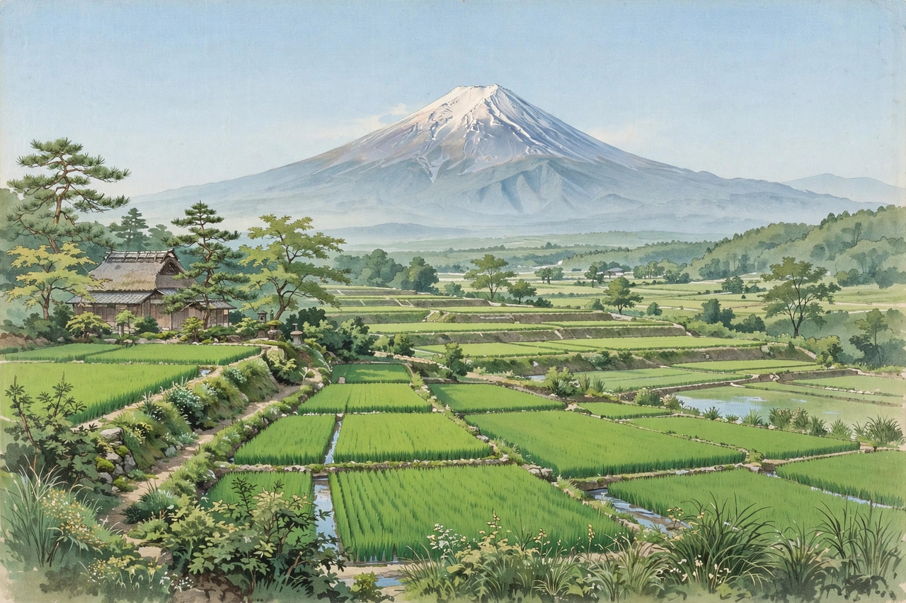

From Wikipedia, the free encyclopedia
| Born | 1662 Owari Province, Japan |
|---|---|
| Died | 1704 (aged 41–42) |
| Occupation | Samurai, poet |
| Genre | Haikai (haiku) |
| Teacher | Matsuo Bashō |
Naitō Jōsō (内藤 丈草, 1662–1704) was a Japanese haikai poet of the Edo period, counted among the ten principal disciples (Shōmon jittetsu) of Matsuo Bashō. A samurai of the Owari domain who gave up his position to devote himself to poetry, Jōsō was famed for his earnest, unadorned style and for his complete devotion to his master.

Jōsō's verses prize simplicity and sincerity.
Jōsō was born in Owari Province (modern Aichi Prefecture) and served as a retainer of the Naruse lords of Inuyama Castle. Unhappy in service, he withdrew from his post — legend says over a dispute about the treatment of a cat, or in grief at his lord's death — and became a disciple of Bashō, whom he accompanied and served with conspicuous loyalty during the master's last years. After Bashō's death in 1694, Jōsō kept a period of mourning and later built a hermitage, continuing to write and to preserve his teacher's memory. He died in 1704, aged about 42.
Jōsō's haiku embody the Bashō school's turn toward plainness and sincerity (makoto): direct observation of humble subjects — fleas, rain, field work — without the wit and ornament of earlier haikai. A well-known verse reads "yagate shinu / keshiki ni miezu / semi no koe" ("soon to die — / yet showing no sign of it — / the cicada's voice"), meditating on a creature that sings without a thought of its short life. His poems appear in the seven major anthologies of the Bashō school, including Sarumino ("The Monkey's Raincoat").